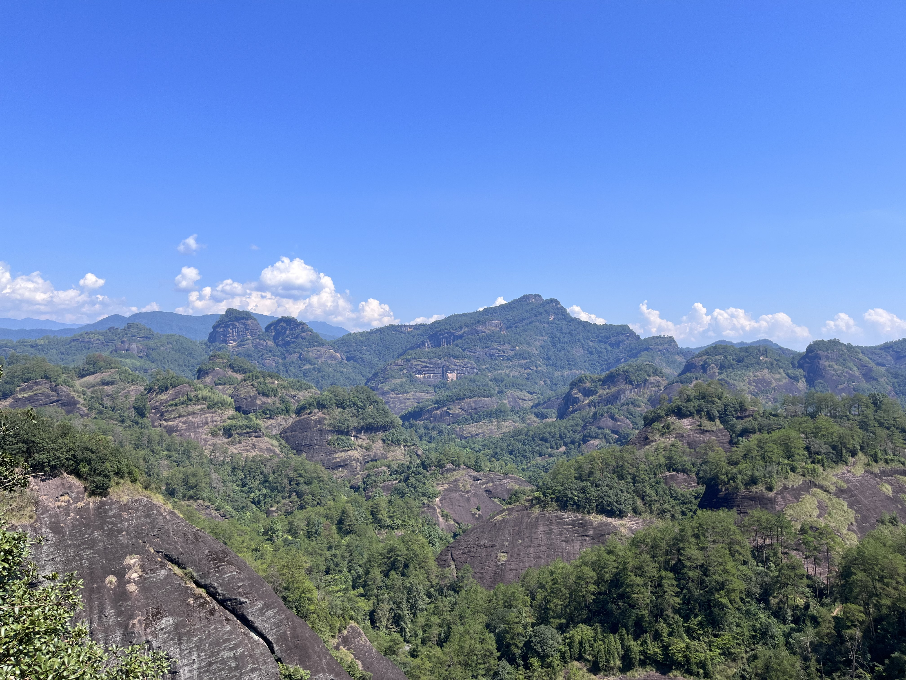

抓住暑假的尾巴进行一个久违的玩 既然门票免费那不得不去了（
上次去还是小学初中的样子 感叹
发现我真的比起城市更喜欢去看这种自然景观 怎么说 城里人太多了（what
依旧是想到哪写到哪 中间还会穿插各种和风景没有什么太大关系的碎碎念 so 作为游记可能也没什么太大参考价值
又 因为个人原因 这篇会掺杂非常非常多的铜仁女发言以及各种破防+胡言乱语 提前进行一个预的警2023.3.26：well 本来应该是22年写的 但是因为各种各样的原因鸽了 so 现在大概只能相当于回忆录了 很多东西可能并不是我当时的想法 但总之记一记
08.12 虎啸岩→玉女峰→印象大红袍
7：00 A.M.
首先，因为目的是在三天内把主要景点都玩一遍（因为回来马上要去学校搬宿舍）所以一大早就出发了。终于能出去玩了遂把pio带上，不过拍的时候才想起来穿的这身似乎有点厚（不过看起来也没有特别违和，算了就这样吧（
然后，因为出发前一晚发生的种种，总之这次旅行我是带了点别的情绪的。在高铁上也是一直在回想有关的事。不过，这件事还是等后面说到了再展开吧。
So，现在就先让我们进入正题。
路上倒蛮快的，因为住的地方离景区不算太远，所以高铁+出租合起来两个半小时我们就到酒店放好东西抵达景区取好票了。很熟悉的景区入口，怎么说呢，故地重游，还是有点感慨的（
顺带一提，一路上时不时就能听到/看到飞机低空飞行，就，第一天见到还是挺mindcrush，后面逐渐习惯（
9：30 A.M.
入园之后依旧是熟悉的接驳车机制，虽然外观比当年肯定好上不少但本质并没有区别，总之按着牌子找到对应的上车地点然后开等就完事（）间隔时间倒也不长，且我们到的时候刚好没等多久（此处应有泊松过程求解），于是直接到了这次旅行的第一站————虎啸岩。
不得不说，虽然这个景点并不是武夷山最出名的景点，但它给我的印象绝对是最深的那一个。直到今天仍然记得当时我们大中午爬山然后我因为怕高+被要求半路停下拍照而被吓哭的记忆（
所以这次把它作为第一站也有种一雪前耻的感觉吧 大概
不过怎么说 因为记忆的确过于久远，所以事实上现在看到的景色和我的模糊印象只有小部分重合，比起熟悉和本应出现的昨日重现，更多的反倒是陌生。虽然同样是艳阳高照的晴天，但是心情完全不一样（
不过过了这么多年，当我已经可以从一个更高（双重含义）的视角观察环境的时候，它的险峻还是非常震撼我心。非常典型的武夷山脉，突出一个只有石头（）一路上不知道是因为时间还是什么，总之游客寥寥。山路狭窄曲折，基本上是才通人而二人勉强的程度，有几段甚至没有护栏或仅有铁链借力。不过因为基本在闷头爬山所以并没怎么拍照，简单用这张图意会一下吧（
但是山顶的视野和景色又的确让攀登的汗水有所收获。当我登上岩顶回头眺望的时候，无论是看到自己刚刚行过的路还是眼前的“一览众山小”，那个瞬间的确让我感受到了万物静止又或者心头一颤的感觉。天空的澄净、远山的磅礴还有带着暖意的微风，真的让人不自觉地宁静下来。在一步步踏上石阶，最终到达顶峰的时候，我的确忘却了那些困扰着我的东西。
当时我就觉得，啊，再来一次果然没有错

下山的时候我们选了另一条路，而后后知后觉地发现也许当年我是从这条路上山的也说不定（）不过不管哪边都有地方和我的记忆对不上号，所以大概也不必纠结于此吧
总之 洒洒水 jjpd已经练出来了 遨游（韦天音
11：00 A.M.
下山以后，因为看时间临近中午，我们就也没再赶往其他需要爬山的景点，沿着溪流和山谷随便走走逛逛。不得不说武夷山的茶园是真的多，不过我们去的那几天刚好一直都没下雨，茶树也干死了好多，可惜了

沿着九曲溪走有一处就能看见玉女峰，在溪水边休憩的确很惬意，但是对那些不看告示下水的xbzz我还是很想一拳一个
他妈的一百万匹海虎爆破拳，我轰散你们呀！（对不起串台了
不过因为天气实在太热+晚上还要去看演出，于是我们也没有继续逛下去，直接回酒店进行一个觉的睡
绯红之王，削去睡觉的这段时间！（开始了
5：30 P.M.
直接昏睡到傍晚，看到时间差不多了就出门觅食。闽北这边的口味其实和南部还挺不一样的，因为和江西交界所以更接近那边的口味，偏辣偏咸，所以吃起来倒也有种在外地的感觉（？）外加我们住的地方并不在市区，所以周围的店面也都主打一个农家风味，菜单上也自然出现一些平时不咋见到的东西。虽然我也没有尝鲜的勇气就是了（
不过这个猴爪菇味道还可以 吃起来很像木耳丝 因为外形蛮奇特就拍了（
7：00 P.M.
简单解决晚餐后我们就往演出的方向走了。其实当年我们来的时候也已经有了这个东西，甚至当时好像还是刚出最火的时候，不过当年的我就突出一个完全不感兴趣，所以也没有体验。这次虽然我也不能说抱有多大兴趣，但姑且是把上次错过的东西进行一个补完吧。
不过，该说今天的天气好的出奇呢，还是这带的景色的确日日如此，还在往座位上走的时候我就被震撼到了。
和以前在海边、城市、或是山顶看到的落日都不一样，金红色的霞光铺开整个天空，和澄蓝天空交接的地方呈现出迷幻的粉色。平静的溪水也被倒影染成了火红。
虽然并不完全一样，但那一刻我的心情，或是我的脑海中闪现出的，就是dif里那一幕。
那一瞬间，虽然演出还没有开始，但是我已经觉得值回票价了（
虽然我现在回忆的时候说了这么多，但当时我的脑子里就完全没有任何的言语形容。完全的失语，只是我眼前的景象和我的心情以及dif里的景象交织在一起，之前难以消散若有若无的情感也在此刻以另一种方式呈现。果然，落日与晚霞不管看多少遍都不会厌烦。每一次都会有全新的感受。
至于演出，它的内容本身对我并没有什么特别吸引的地方。当然，灯光效果、演员表演、全景舞台以及实景结合这些特点做的还是很到位的，的确会让人眼前一亮。不过对我来说，它更多的是在一种非常巧合的情况下和我的心情与思绪产生了共鸣，因而引发了我的一些胡思乱想。
如果要在这里把前因后果讲清楚的话大概会占到很大一段篇幅而严重偏题，所以这里就不展开说了。总之出发前一天，准确来说是前一晚，我的心情非常糟糕，破防到我用亲身体验把当年孤立森林里我自己没搞懂的一些想法补完了（然后在这种极度emo的情况下又磕到了我cp，什么同人女啊绷不住了）。虽然现在回看就觉得jjpd脑子怎么能成这样点点点无大语，但当时的jjpd的确是破了大防（这么一看好像我每年一定会因为我cp破防一次 笑死 什么定番），于是在出发前就非常情绪上头的给这次旅行定下了一个主题：遗忘，或者说逃离。
暂且放下那些困扰我的事，仅仅去感受那些风景与事物。（虽然事实上并不能放下因为我当晚马上又开始口嗨（乐
而晚上演出的主题就这么刚好地和我的想法达成了一致，远离城市的喧嚣和纷扰，仅仅在此时此刻寄情山水。虽然终归是要重新回到那些浪潮之中，去面对那些影响我的东西，但我的确可以用更平静的心情去处理一切。
从这个角度上来说，这场演出的确很成功地调动了我的情绪。
而后，在演出的半途，看到布景背后的圆月散发着柔和的光芒，完美融入舞台上的表演与故事的时候，我突然意识到今晚是农历十五。怎么说呢，有时候事情就是这么刚好吧。
而后又切实的感觉到，满月这个意向可能确实只有拆尼斯或者东亚人才能理解（不过我觉得拆尼斯和霓虹等等的理解又很不一样，不如说大家的理解都带有自己的特点
顺便，既然提到了口嗨，那就不得不说两句了（。）好像就是那天晚上jjpd很唐突地开始回忆dif剧情然后开始觉得自己在终章被关在了门外，笑死
然后虽然已经无法溯源，但大概率最后的收束情节也是因为我那天晚上很想看亲手背+想用一次血管触感描写所以衍生出来的产物（
只能说，不愧是jjpd，这么快就走出来了（
总之，第一天的行程也就到此结束，快进到下一天————
08.13 九曲溪竹筏→大王峰→一线天→大红袍
7：00 A.M.
首先就是进行一个早的起。因为竹筏票非常紧张且天气巨热所以选了最早的一班，而就算如此漂到一半阳光也已经很强烈了。
整体而言和好几年前并没有什么变化，也许竹筏有用更结实的材料制作变得更大吧，但一切和我的记忆相比并没有太多改变。到现在我还记得当年坐竹筏的时候同船的另一家人相机挂绳断了然后东西直接掉进了溪里，又因为前段时间下雨水位涨得高没法找回，就还挺遗憾的。一贯的追加讲解服务也仍然有保留，不过我们当年就已经体验过了大概这么多年过去稿子也不会翻新，且船上其他人也没什么表示就不了了之，突出一个只是瞧。不过现在还多出了撑杆体验这种东西，到水流比较平静的地方船夫会给你进行摆拍的机会，也算是有点互动吧大概。顺便，溪里鱼很多，可以带面包馒头什么的喂，不用担心扔出去没鱼来（
扯的有点远了，说回风景吧。景色还是一如既往的好，蓝天、绿树、清澈的溪水和两旁的群山峭壁，的确是非常惬意宁静的体验，无论是想来爬山挑战自己还是单纯的放空都应该来体验一下。一路上还有很多摩崖石刻以及各种历史遗迹，当然这些对我而言就只能权当了解了。时长大约一个小时，路途也就是沿溪而下绕过九曲结束。途中还会经过一些连通两岸的桥洞，颇有种互为风景的感觉。虽然但是，我本来打包了一碗豆花想在竹筏上吃，结果完全没有机会（因为事实上有的溪段水还是挺急的），在座位上放了一路下了船才吃掉，笑死
但挺好吃的，说的我又想吃豆花了（
最后快结束的时候会穿过一段竹林间的水道 感觉是新开辟的因为我印象里没有（）阳光洒下真的有种飘然世外的感觉

下船吃过没来得及吃的早饭后就前往下一个景点了，也就是原定昨天去爬的大王峰。其实中间还有经过武夷宫和万春园，不过我们对这两个地方的兴趣都不大也就没有多留。
而至于大王峰，那就不得不多讲几句了。请看下一段vcr（什么东西
9：00 A.M.
在把大王峰加入我们的路线清单的时候其实我们已经了解过了一些相关的信息。虽然这座山同样是武夷山的标志性景点，但它因为过于险峻而并没有如天游峰般被完全开发，事实上基本处于一种荒野的状态，只是修了路和路标而已，而攀登的过程也并不轻松。但是本着“来都来了”的精神，我们还是义无反顾地踏上了台阶。且横竖我们一家都还算是有持续锻炼+户外经历的，想必也是洒洒水（
虽然但是，jjpd还是太高估自己了（
不知道是什么原因，总之我没爬多少就开始犯晕喘气，休息也没什么大用。但我还是非常不甘心的继续莽（虽然这么一说感觉最好不要学，但当时的我只是单纯想试验这种不适到底是来源于我真的体力不行还是其他因素）不过大概人体确实有适应机制吧，走着走着我居然气也不喘腿也不痛了（什么广告），人体，很神奇吧（
顺带一提，一路上确实什么景色都没有。虽然有的地方可以俯瞰城镇以及旁边的溪水，但抛开这个以外能看见的就只有石头（）不过正反馈机制做的很到位，每爬一段就会有个里程指示，让人很难半途而废（
不过爬到大约三分二的时候有一段确实很险，且不是常规意义上的险。大概是因为在外围修楼梯难度太大，有一小段的台阶是在两块岩壁间的缝隙修建的。而因为缝隙无论是长还是宽都很窄，所以爬的时候不仅身形扭曲小心碰头而且转角的时候要直接反身上跨，看到底下人的头就在自己脚不远的地方真的很怕一个踩空（）不过临近山顶的时候终于不再是光秃秃的岩石，能够看到泥土和绿树，这种变化在那种时候确实会给人一些惊喜。
最后，历时一小时四十分钟，到达武夷最高层（物理）！
那么山顶将会有什么东西在等待我们呢？！
答案是————什么都没有。

对的，就是只有这个终点指示牌一样的东西，除此之外什么都没有。路上有几个小孩被家长哄着爬到山顶买冰淇淋吃，想必会有很大的心理阴影面积（
不过其实，这么一想，爬这座山的目的和意义也就变得更加纯粹了，突出一个精神收获。而事实上景色也确实不错，因为是景区的最高点，所以的确有一览无余的效果。
我倒还挺开心的，因为路上人是真的少（

又，既然我那么费劲把pio背了上来，那怎么也得拍几张打个卡（
相比之下，下山就轻松多了。仔细一想的话，徐霞客大概算是某种意义上的户外徒步鼻祖吧大概
3：00 P.M.
下山之后我们就直接去了一线天。景如其名，也就是在两山的缝隙间贴壁穿行。虽然但是，参观这里的时候要做好听见此起彼伏蝙蝠叫声以及闻到蝙蝠气味的准备（虽然我觉得也没有网上说的那么难以忍受就是了）。因为不见天日，所以凉快是真的很凉快。单纯体验的话我觉得还是可以来逛逛感受一下，但要是期待能看到什么非常震撼的景色可能会有点失望吧（）但反正走一趟也就不到十分钟，倒也没有很亏（
没有照片，因为太窄了我不想拿手机（
4：00 P.M.
因为看时间还早，外加我们这次来也带着点户外拉练的目的，所以就去走了景区里几条新修的步道。基本上都是沿着茶园或者溪流修的，整体路都还挺平，所以其实也就是散步。如果到春秋天景色可能会更好，夏天虽然阳光充足但很多茶树都被晒蔫了，少了些景致。不过一路上知道了很多岩茶的品种，也算是有收获（？）
然后因为顺路，以及无敌的“来都来了”，虽然我们上次已经看过大红袍母树长什么样了，但还是往那边逛了一圈。但说实话，真的没想到会有那么多人，以及，完全没有变化，还是那么小一棵（

不过这么一逛也差不多到了饭点。刚好赶上最后一班接驳车就回酒店吃饭了。顺便，今天的晚霞也依旧迷人。
至此，第二天的行程也结束惹。不过爬完山走完路晚上腿居然没怎么痛也是很神奇。接下来就是最后一天，gogogo————
08.14 天游峰→桃源洞
8：00 A.M.
虽然今天同样要一大早起来爬山，但至少有了坐下来吃早饭的余裕。话说回来，最标志性的景点却被我们放在了最后一天，笑死
有一说一，天游峰的确是最能体现武夷山脉低貌特色的地方了，确实非常有特点，虽然已经是第二次来，但登顶看到远处的悬崖峭壁的时候依然会被震撼到。
说回爬山，有了昨天的历练，天游峰的路不要太好走，简直遨游（
不得不说，jjpd这几年的饭还是没有白吃（什么东西
另一方面，人也是真的多。就算我们去的时候事实上游客根本算不上多（否则他也不用搞免门票这种活动吸引客流），但一路上还是人人人人，所以行进速度极为缓慢，可能这也是一个爬起来不累的原因吧（
又 不知道为啥以前通往一处观景台的台阶封住了，因为完全没人所以入镜之后反而更有气氛了

10：00 A.M.
从山背下山，我们也就直接前往了这次的最后一个景点————桃源洞。沿着小径一步步接近的时候确实有种误入桃源的感觉，路上也背起了桃花源记，不得不说我现在居然还会背真是令人感叹（虽然后面后知后觉意识到应该从另一个入口进更符合原作描写（？）但的确很有那种隐世的感觉
整个景点其实就是被群山环抱的坐落在山谷间的几栋建筑，但就是这种环境让它不需要再做什么的装饰就已经有了幽静恬然的感觉。而离开的时候，我又觉得把这个景点作为结束这趟旅途的象征也未尝不是一种巧合。桃源并不是我们能够久居的地方，而就算我们暂时跳脱原本的生活，离开那些纷扰，最终也仍要像那渔夫般离开，甚至最后想要回到桃源时却不复得路。
但其实，我觉得有这样一段经历，虽然无法重游故地也是一件令人遗憾的事，但至少还能够凭借回忆重新品尝当时的种种。虽然记忆也会模糊，随着时间的流逝最终都会消失，但至少我已经体验过那些事物，而当时的我已经感受过了那些情感和思绪。
jjpd经典的话题全歪环节，还是就此打住好了。
最后，就用这次旅程留下的最后一张照片作为收尾吧。
顺便 既然都来了 那不得不品尝特色岩茶
虽然但是 几乎每个司机都会和一个茶室合作宣传 笑死
导致最后我们回到家里才去网上买（
其实平时也一直在喝（铁血福建饮茶人） 就是说 岩茶的味道真的很特别
不过喝到现在我对肉桂的味道有时还是会有些接受不能 就 真的有点重（
不过这次想买主要是因为在景区里看到一种叫水仙的茶叶 非常之好奇就想尝尝
只能说 真的很不一样 就 那个味道在具有岩茶特点的同时又出乎意料的 淡（？）
很难形容 但确实是很难忘的味道
茶叶 很神奇吧
但是很遗憾 身边都没有和我一样的饮茶人 安利不出去苦露西（
时隔大半年回看当时的照片，居然还有点感叹
到后半段突然消失的我cp要素，大概是因为我的确暂时放下了那些东西投入到自己的体验里了吧（虽然那几天每天晚上还是会时不时bb几句
至于最后那段突然的发散思维到底在说些什么不知所谓的东西，答案是我也不知道。
以及，因为最近在看海虎，所以写的时候忍不住玩了梗，打扰了（